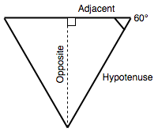

Math
Math is a built-in object that has properties and methods for mathematical constants and functions. It's not a function object.
Math works with the Number type. It doesn't work with BigInt.
Description
Unlike many other global objects, Math is not a constructor. All properties and methods of Math are static. You refer to the constant pi as Math.PI and you call the sine function as Math.sin(x), where x is the method's argument. Constants are defined with the full precision of real numbers in JavaScript.
Note: Many Math functions have a precision that's implementation-dependent.
This means that different browsers can give a different result. Even the same JavaScript engine on a different OS or architecture can give different results!
Static properties
Math[@@toStringTag]-
The initial value of the
@@toStringTagproperty is the string"Math". This property is used inObject.prototype.toString(). Math.E-
Euler's number and the base of natural logarithms; approximately
2.718. Math.LN2-
Natural logarithm of
2; approximately0.693. Math.LN10-
Natural logarithm of
10; approximately2.303. Math.LOG2E-
Base-2 logarithm of
E; approximately1.443. Math.LOG10E-
Base-10 logarithm of
E; approximately0.434. Math.PI-
Ratio of a circle's circumference to its diameter; approximately
3.14159. Math.SQRT1_2-
Square root of ½; approximately
0.707. Math.SQRT2-
Square root of
2; approximately1.414.
Static methods
Math.abs()-
Returns the absolute value of
x. Math.acos()-
Returns the arccosine of
x. Math.acosh()-
Returns the hyperbolic arccosine of
x. Math.asin()-
Returns the arcsine of
x. Math.asinh()-
Returns the hyperbolic arcsine of a number.
Math.atan()-
Returns the arctangent of
x. Math.atanh()-
Returns the hyperbolic arctangent of
x. Math.atan2()-
Returns the arctangent of the quotient of its arguments.
Math.cbrt()-
Returns the cube root of
x. Math.ceil()-
Returns the smallest integer greater than or equal to
x. Math.clz32()-
Returns the number of leading zero bits of the 32-bit integer
x. Math.cos()-
Returns the cosine of
x. Math.cosh()-
Returns the hyperbolic cosine of
x. Math.exp()-
Returns ex, where x is the argument, and e is Euler's number (
2.718…, the base of the natural logarithm). Math.expm1()-
Returns subtracting
1fromexp(x). Math.floor()-
Returns the largest integer less than or equal to
x. Math.fround()-
Returns the nearest single precision float representation of
x. Math.hypot()-
Returns the square root of the sum of squares of its arguments.
Math.imul()-
Returns the result of the 32-bit integer multiplication of
xandy. Math.log()-
Returns the natural logarithm (㏒e; also, ㏑) of
x. Math.log1p()-
Returns the natural logarithm (㏒e; also ㏑) of
1 + xfor the numberx. Math.log10()-
Returns the base-10 logarithm of
x. Math.log2()-
Returns the base-2 logarithm of
x. Math.max()-
Returns the largest of zero or more numbers.
Math.min()-
Returns the smallest of zero or more numbers.
Math.pow()-
Returns base
xto the exponent powery(that is,xy). Math.random()-
Returns a pseudo-random number between
0and1. Math.round()-
Returns the value of the number
xrounded to the nearest integer. Math.sign()-
Returns the sign of the
x, indicating whetherxis positive, negative, or zero. Math.sin()-
Returns the sine of
x. Math.sinh()-
Returns the hyperbolic sine of
x. Math.sqrt()-
Returns the positive square root of
x. Math.tan()-
Returns the tangent of
x. Math.tanh()-
Returns the hyperbolic tangent of
x. Math.trunc()-
Returns the integer portion of
x, removing any fractional digits.
Examples
Converting between degrees and radians
The trigonometric functions sin(), cos(), tan(), asin(), acos(), atan(), and atan2() expect (and return) angles in radians.
Since humans tend to think in degrees, and some functions (such as CSS transforms) can accept degrees, it is a good idea to keep functions handy that convert between the two:
function degToRad(degrees) {
return degrees * (Math.PI / 180);
}
function radToDeg(rad) {
return rad / (Math.PI / 180);
}
Calculating the height of an equilateral triangle
If we want to calculate the height of an equilateral triangle, and we know its side length is 100, we can use the formulae length of the adjacent multiplied by the tangent of the angle is equal to the opposite.

In JavaScript, we can do this with the following:
50 * Math.tan(degToRad(60))
We use our degToRad() function to convert 60 degrees to radians, as Math.tan() expects an input value in radians.
Returning a random integer between two bounds
This can be achieved with a combination of Math.random() and Math.floor():
function random(min, max) {
const num = Math.floor(Math.random() * (max - min + 1)) + min;
return num;
}
random(1, 10);
Specifications
| Specification |
|---|
| ECMAScript Language Specification # sec-math-object |
Browser compatibility
| desktop | mobile | server | |||||||||||
|---|---|---|---|---|---|---|---|---|---|---|---|---|---|
Math | |||||||||||||
E | |||||||||||||
LN10 | |||||||||||||
LN2 | |||||||||||||
LOG10E | |||||||||||||
LOG2E | |||||||||||||
PI | |||||||||||||
SQRT1_2 | |||||||||||||
SQRT2 | |||||||||||||
abs | |||||||||||||
acos | |||||||||||||
acosh | |||||||||||||
asin | |||||||||||||
asinh | |||||||||||||
atan | |||||||||||||
atan2 | |||||||||||||
atanh | |||||||||||||
cbrt | |||||||||||||
ceil | |||||||||||||
clz32 | |||||||||||||
cos | |||||||||||||
cosh | |||||||||||||
exp | |||||||||||||
expm1 | |||||||||||||
floor | |||||||||||||
fround | |||||||||||||
hypot | |||||||||||||
imul | |||||||||||||
log | |||||||||||||
log10 | |||||||||||||
log1p | |||||||||||||
log2 | |||||||||||||
max | |||||||||||||
min | |||||||||||||
pow | |||||||||||||
random | |||||||||||||
round | |||||||||||||
sign | |||||||||||||
sin | |||||||||||||
sinh | |||||||||||||
sqrt | |||||||||||||
tan | |||||||||||||
tanh | |||||||||||||
trunc | |||||||||||||